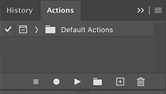

Il est parfois nécessaire d'effectuer un traitement identiques sur plusieurs images 🖼️. Par exemple, les redimensionner ou encore les optimiser afin de diminuer leur poids. Heureusement, il est possible de créer un script appelé action via Photoshop et de lui indiquer un groupe de fichiers sur lesquels s'appliquer.
Pour ce faire, dans Photoshop, il faut allez dans l'onglet Fenêtre et sélectionner l'option Actions. La fenêtre d'actions suivante devrait s'afficher.
Il est possible de créer des actions en cliquant sur l'icône +, de les supprimer avec la poubelle 🗑️ ou de les organiser/grouper avec le dossier 📁.

Lorsqu'une action est créée, il faut lui attribuer:
- Un nom (Action 1)
- Un dossier (Dossier par défaut)
Il est aussi possible, mais optionnel, de lui attribuer - Un raccourcis clavier
- Une couleur
Il est possible de démarrer l'enregistrement en cliquant sur l'icône 🔴. Dès lors, toutes les manipulations effectuées sur le fichier de référence ouvert seront sauvegardés jusqu'à ce que l'enregistrement soit arrêté.
À tout moment, il est possible d'arrêter l'enregistrement via le bouton ⏹️
Si désiré, une action peut être déclenchée sur le fichier ouvert via le bouton ▶️
Une fois l'action enregistrée, il faut l'appliquer aux fichiers désirés. Pour ce faire, il faut allez dans l'onglet Fichier, sélectionner l'option Automatisation et choisir Traitement par lots…. La fenêtre suivante devrait alors s'afficher.

Il faut maintenant indiquer dans quel dossier se trouve l'action (Ensemble). Spécifier le nom de l'action désirée (Action). Indiquer où se trouve les fichiers devant être traités (Source) et optionnellement, donner un dossier de destinations où la nouvelle versions des fichiers pourra être sauvegardée (Destination).